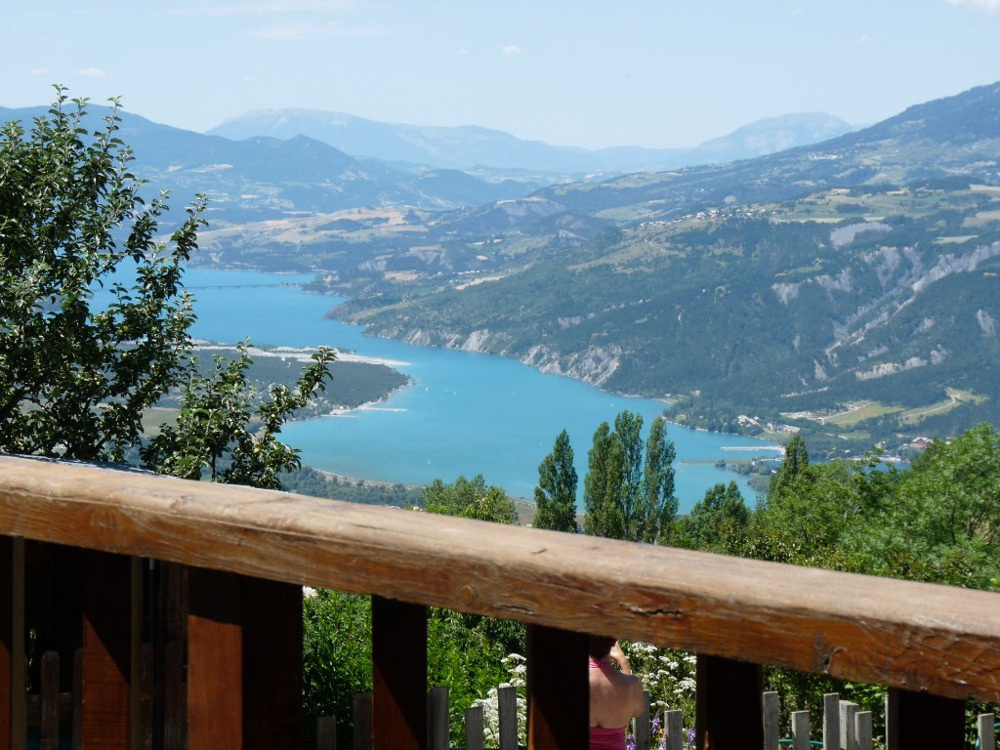
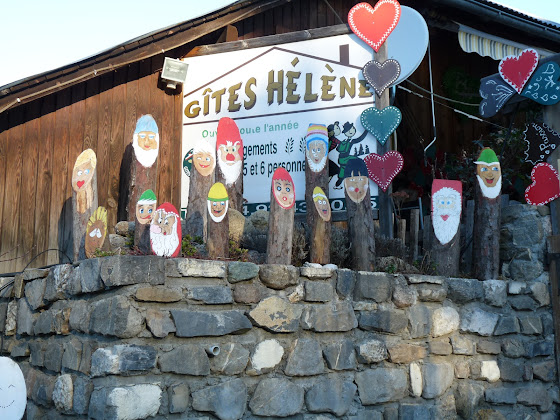
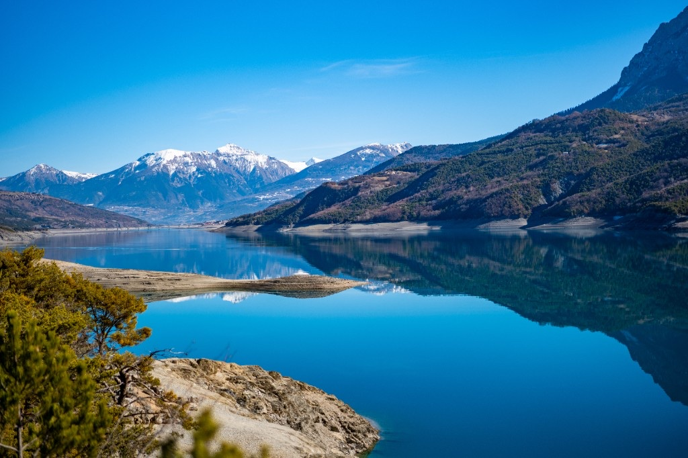
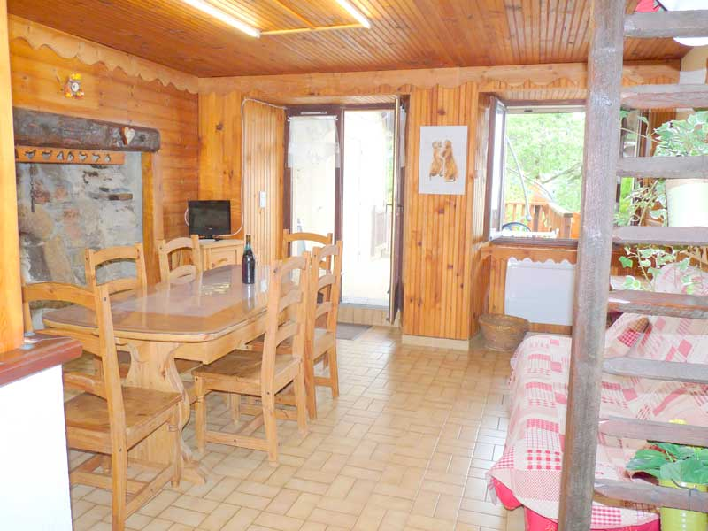
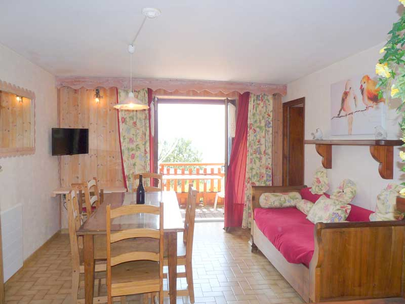
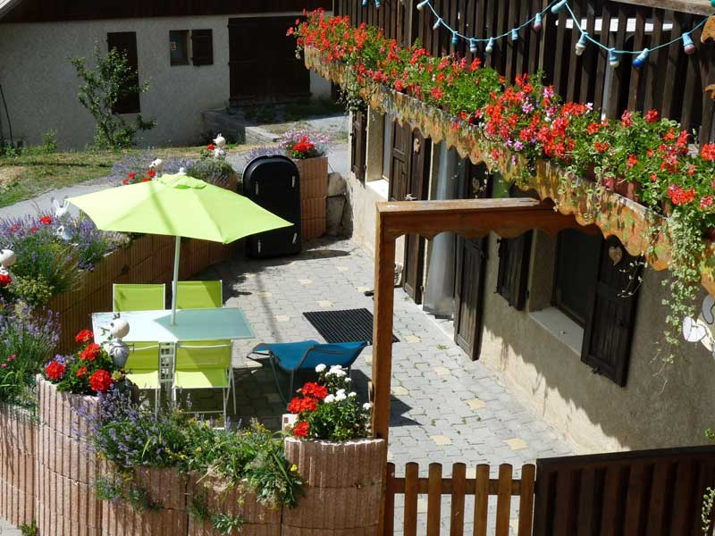
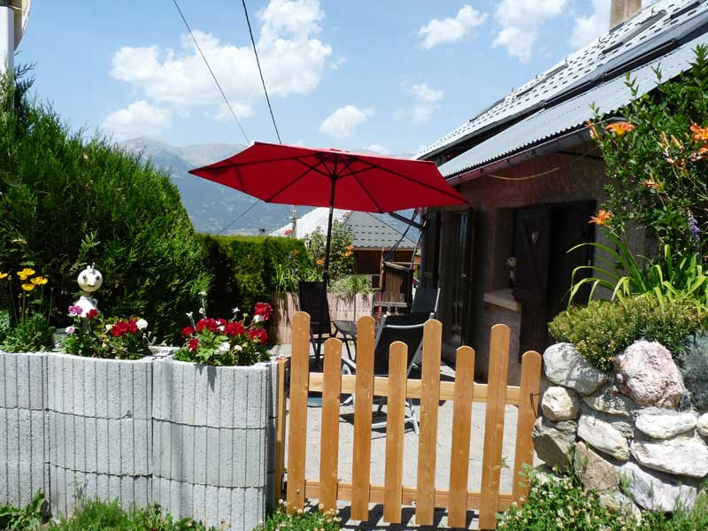
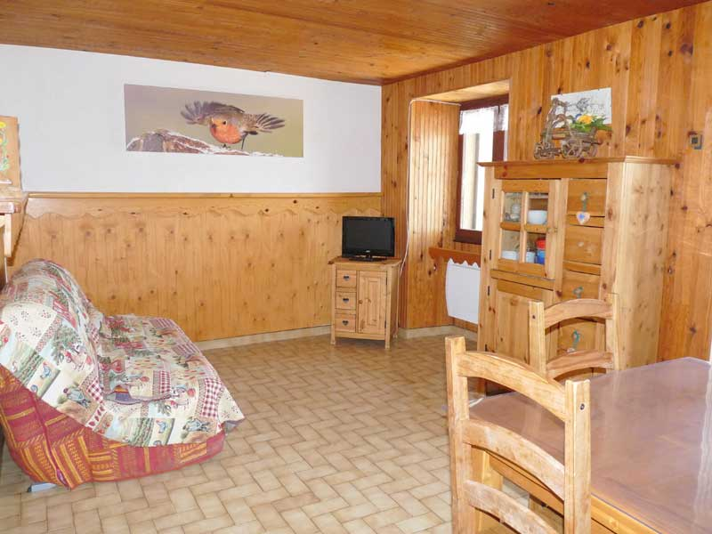

Locations de gîtes dans les Hautes-Alpes
Venez vous ressourcer dans nos gîtes surplombant le lac de Serre-Ponçon, au cœur d'une nature splendide, été comme hiver.
Aux Gaillards, entre montagne et lac
Nos gîtes sont postés dans le petit village des Gaillards, à 1 300 m d'altitude sur la commune de St-Sauveur, très proche d'Embrun et des Orres, au cœur du magnifique département des Hautes-Alpes.
Cette belle région inondée de soleil vous offre une nature splendide et est un lieu privilégié pour les activités nautiques, de montagne et de repos. Pas de commerce aux Gaillards, mais des produits du jardin et du terroir — tout ce qu'il faut pour des vacances réussies !
Ici ou là, le calme et le bien-être vous sont assurés, pour vous reposer et vous ressourcer.


Lac de Serre-Ponçon & Embrun
Le bleu azur du ciel se marie avec celui du lac à l'infini. Baignade, voile, paddle, randonnée… les couchers de soleil y sont des moments de pur bonheur.
Depuis les Gaillards, Embrun et le lac de Serre-Ponçon sont à portée de main pour des journées nature et détente.
Découvrir les activitésNos gîtes
Des hébergements atypiques pour tous les séjours

Gîte Valeur Sûre
2+3 pers.Gîte spacieux et fiable, idéal pour une famille ou un petit groupe.

Gîte Coup de Cœur
4 pers.Deux espaces indépendants — parfait pour deux couples ou amis.

Gîte Cocon Confort
2+2 pers.Confort et douceur pour un séjour en famille au calme.

Gîte Câlin
2 pers.Un cocon intime pour un séjour à deux.

Gîte Chal'heureux
2 pers.Chaleur et simplicité dans un cadre montagnard authentique.
Se munir des sacs de couchage, linge de toilette et linge personnel. Nous consulter pour les tarifs nuitée à partir de 18 personnes.
Gîtes et accueil de groupes
Gîtes confortables et tous indépendants pouvant accueillir les groupes jusqu'à 20 / 22 personnes. Base idéale pour associations, vététistes, cyclistes, randonneurs, skieurs de rando, motards, parapentistes…
Salle en gestion libre
Grande salle avec coin cuisine équipé, 22 places assises.
Activités à la porte
VTT, randonnées, parapente, excursion le Méol (1 100 m D+), tour du lac de Serre-Ponçon…
Cadre privilégié
Panoramique, loin du trafic, air pur — emplacement privé pour les voitures. Gestion familiale du 10 septembre au 4 juin.
Carte & accès
Comment venir ?
- Accès facile en voiture
- Parking sur place
- Route dégagée et accessible toute l'année
- Environnement calme, loin des routes passantes
Au Gîte Hélène, vous serez reçu en ami
Embrun et la région de Serre-Ponçon sont réputés pour y passer de formidables vacances — ensoleillement, lac classé n°1, 80 km de rives, randonnées des Orres à Crévoux… On y vient pour découvrir, on y revient pour le plaisir.
Les activités